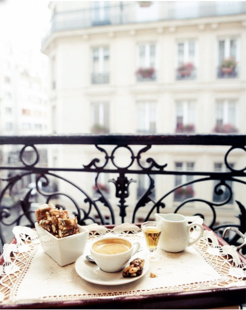

MTVM - Chương 1
QUYỂN MỘT
oOo
CHƯƠNG 1

Robert Cohn từng là nhà vô địch hạng trung môn đấm bốc ở Princeton[1]. Cho dù tôi cũng chẳng ấn tượng chi lắm với cái danh hiệu đó, nhưng nó lại có ý nghĩa rất lớn đối với Cohn. Gã cũng chẳng bận tâm mấy đến cái môn đấm bốc, nếu không muốn nói là ghét nó, nhưng gã đã tổn hao khá nhiều sinh lực để học cái môn này nhằm kháng cự lại cái cảm giác thấp kém và hổ thẹn khi bị đối xử như một tên Do Thái từ hồi còn ở Princeton. Chắc chắn có sự khuây khỏa nào đó khi biết rằng gã có thể đánh bại bất kỳ ai khinh thường mình, mặc dầu vậy, là một anh chàng khá rụt rè và tương đối dễ thương, gã chẳng bao giờ tham chiến bên ngoài phạm vi phòng tập. Gã là môn đệ cưng của Spider Kelly. Spider Kelly dạy dỗ tất cả các quý ông trẻ tuổi của mình đấm bốc theo kiểu võ sĩ hạng nhẹ, cho dù họ có nặng một trăm linh năm pound[2] hay hai trăm linh năm pound đi nữa. Nhưng có vẻ như nó phát huy hiệu quả đối với Cohn. Gã rất nhanh nhẹn. Biểu hiện của gã tốt đến mức Spider có hơi trân trọng gã quá và kết quả là cái sống mũi cao cao của gã trở nên dẹp lép. Sự kiện này càng làm tăng thêm mối ác cảm trong Cohn đối với môn đấm bốc, nhưng nó cũng mang lại cho gã sự thỏa mãn nhất định, và làm thay đổi cấu trúc chiếc mũi của gã ít nhiều. Trong năm cuối ở Princeton gã đọc quá nhiều nên phải đeo kính. Tôi chưa từng chứng kiến một ai cùng học chung lớp mà có thể nhớ nổi ra gã. Họ còn chẳng thể nhớ nổi gã đã từng giành chức vô địch môn đấm bốc hạng trung.
Tôi thường không đặt lòng tin vào những kẻ bộc trực và đơn giản, đặc biệt là khi các câu chuyện của họ xâu chuỗi được với nhau, và tôi luôn ngờ rằng có thể Robert Cohn chưa từng đoạt chức vô địch hạng trung môn đấm bốc, và rằng có thể một con ngựa nào đó từng đạp vào cái mặt gã, hoặc là cũng có thể bà mẹ gã từng một lần lên cơn khiếp đảm hoặc nhìn thấy phải một thứ gì đó, cũng có khi là gã bị ngã dập mặt vào một thứ gì đó hồi còn nhỏ xíu cũng nên, nhưng rốt cuộc có một ai đó đã chứng thực với tôi câu chuyện từ Spider Kelly. Spider Kelly không chỉ còn nhớ được Cohn. Ông vẫn luôn quan tâm tới những chuyện xảy ra với gã.
Robert Cohn là thành viên, nhờ cha của hắn, của một trong những gia đình Do Thái giàu có nhất New York, và nhờ mẹ hắn là một trong những gia đình lâu đời nhất. Ở trường quân sự trước khi vào Princeton, gã chơi rất cừ trong đội bóng của trường, không một ai khiến gã phải bận tâm về vấn đề chủng tộc. Không một ai từng khiến gã cảm thấy mình là thằng Do Thái, và do vậy ở đó không có sự phân biệt đối xử nào cả, cho tới khi gã vào Princeton. Gã từng là một cậu chàng tử tế, một cậu chàng thân thiện, và nhút nhát, và điều này khiến gã cảm thấy cay đắng. Gã trút hết vào môn đấm bốc, và gã rời khỏi Princeton với cảm giác đau khổ về bản thân cùng với cái mũi gãy, và kết hôn với cô nàng đầu tiên đối xử tử tế với gã. Gã cưới vợ được năm năm, có ba đứa con, tiêu hết gần năm mươi ngàn đô la mà ông bố để lại cho gã, phần bất động sản thì thuộc về bà mẹ, khó tiếp cận hơn bởi hậu quả của đời sống hôn nhân không hạnh phúc và vô vị của một quý bà giàu có; và chỉ khi gã đi đến quyết định bỏ vợ thì cô ta lại bỏ gã mà đi với một tay họa sĩ tiểu họa. Bởi vì gã đã phải dành ra hàng tháng trời để mà cân nhắc đến việc bỏ cô vợ này rồi quả quyết rằng mình không thể làm thế do tính tàn nhẫn của bản chất sự việc, sự ra đi của cô nàng là một cơn chấn động lành mạnh dành cho Cohn.
Vụ li dị được dàn xếp và Robert Cohn chuyển tới bờ Tây. Ở California, gã kết bạn với hàng tá người hoạt động trong lĩnh vực văn chương, và bởi gã vẫn còn lại một ít từ số tiền năm mươi nghìn đô la, trong một thời gian ngắn gã trở thành cây viết bình luận cho tờ Văn nghệ. Bài bình luận giới thiệu các tác phẩm được xuất bản từ Carmel, California, tới Provincetown, Massachusetts[3]. Cũng trong thời gian đó Cohn, người được chào đón đơn thuần như một thiên sứ, với cái tên gã xuất hiện trên trang biên tập trong vai trò của ban cố vấn, đã trở thành biên tập chính. Đó là tiền của gã và gã nhận ra mình cũng có hứng thú với quyền hạn của một nhà biên tập. Gã đã rất tiếc nuối khi cuốn tạp chí thành ra quá đắt đỏ và gã buộc lòng phải từ bỏ nó.
Tuy nhiên, cũng trong thời gian đó, gã vẫn có những thứ khác cần phải lo lắng tới. Gã được chăm nom bởi bàn tay của một người phụ nữ nuôi hy vọng được rạng danh cùng tờ báo. Cô ta rất quyết đoán, và Cohn chưa từng có cơ hội thoát khỏi bàn tay chăm sóc đó. Ngoài ra gã cũng chắc mẩm rằng mình yêu cô ta. Khi người phụ nữ này nhận thấy tờ tạp chí sẽ không phát triển được, cô ta trở nên hơi chán ghét Cohn và quyết định rằng cô nàng nên lấy đi những gì có thể trước khi quá muộn, vì thế cô ta nằng nặc rằng họ phải tới châu Âu, nơi mà Cohn có thể viết. Và họ tới châu Âu, nơi cô ả từng được thừa hưởng nền giáo dục, và ở lại đó trong ba năm. Trong ngần ấy thời gian, năm đầu tiên được dùng để đi du lịch, hai năm còn lại dành cho Paris, Robert Cohn có hai người bạn, Braddocks và tôi. Braddocks là bạn văn của gã. Còn tôi là bạn chơi tennis.
Cô ả có được gã, tên là Frances, nhận ra vào cuối năm thứ hai rằng mình đã xuống sắc, và thái độ của cô ta đối với Robert đã chuyển biến từ sự sở hữu và khai thác vô tâm thành lòng quyết tâm tuyệt đối rằng gã phải cưới cô nàng. Trong suốt thời gian này bà mẹ của Robert đã thu xếp cho gã một khoản phụ cấp, khoảng ba trăm đô la mỗi tháng. Trong vòng hai năm rưỡi tôi không tin rằng Robert Cohn có để mắt đến người đàn bà nào khác. Gã gần như hạnh phúc, trừ việc, cũng giống như nhiều người khác sống ở châu Âu, gã thà sống ở Mỹ còn hơn, và gã khám phá ra niềm vui viết lách. Gã hoàn thành cuốn tiểu thuyết đầu tay, và nó quả thật không đến nỗi tệ như lời đánh giá của các nhà phê bình sau đó, dù quả thực câu truyện của gã có hơi quá nghèo nàn. Gã đọc rất nhiều sách, chơi bài, chơi tennis, và tập đấm bốc ở phòng tập.
Lần đầu tiên tôi nhìn ra thái độ của người đàn bà của gã đối với gã là vào một tối nọ sau khi cả ba chúng tôi vừa dùng bữa. Chúng tôi ăn tại quán Avenue và sau đó tới uống cà phê ở Café de Versailles. Chúng tôi uống rất nhiều fine[4] sau khi dùng xong cà phê, và tôi nói rằng tôi phải đi thôi. Cohn nói về việc hai chúng tôi nên đi đâu đó vào dịp cuối tuần. Gã muốn ra khỏi thành phố và đi dạo đây đó. Tôi gợi ý nên bay tới Strasbourg[5] và đi bộ đến Saint Odile[6], hoặc một nơi nào đó hoặc chỗ nào khác ở Alsace[7]. “Tôi biết một cô nàng ở Strasbourg có thể làm hướng dẫn viên cho chúng ta,” tôi nói.
Có ai đó đá vào chân tôi từ dưới gầm bàn. Tôi cho rằng đó là một sự ngẫu nhiên và tiếp tục: “Cô ấy đã ở đó hai năm rồi và biết mọi thứ cần biết về thị trấn. Cô nàng rất được.”
Tôi lại bị đá lần nữa và, nhìn lên, thấy Frances, người tình của Robert, cằm cô nàng vênh lên và khuôn mặt đanh lại.
“Chết tiệt,” tôi nói, “tại sao lại đi Strasbourg nhỉ? Chúng ta có thể đi Bruges[8], hoặc là Ardennes[9].”
Cohn nom nhẹ nhõm hẳn. Tôi không bị đá vào chân nữa. Tôi chào tạm biệt và rời đi. Cohn nói gã muốn mua một tờ báo và sẽ đi cùng tôi đến góc phố. “Vì Chúa,” gã nói, “tại sao cậu lại nhắc tới cô gái ở Strasbourg thế? Cậu không nhìn thấy Frances à?”
“Không, tại sao tôi phải để ý đến cô ta? Nếu tôi quen một cô gái Mỹ sống ở Strasbourg thì liên quan quái gì đến Frances?”
“Chẳng có gì khác biệt đâu. Dù là cô nào đi nữa. Tôi không thể đi được, chỉ có vậy mà thôi.”
“Đừng có ngốc thế.”
“Cậu không biết Frances đâu. Không có cô nào cả. Cậu không thấy cái nhìn của cô ta à?”
“À, ừ,” tôi nói, “thế thì đi Senlis[10] vậy.”
“Cậu đừng bực.”
“Tôi không bực. Senlis cũng tốt và chúng ta có thể ở lại Grand Cerf[11] và đi bộ vào rừng rồi quay về nhà.”
“Tốt, như thế cũng hay.”
“Được, thế thì mai tôi sẽ gặp cậu ở sân quần vợt” tôi nói.
“Chào Jake nhé,” gã bảo, và quay trở lại quán café.
“Cậu quên mua báo đấy,” tôi gọi lại.
“Cũng thế cả thôi.” Gã đi với tôi đến quầy báo nơi góc phố. “Cậu không bực mình chứ, hả Jake?” Gã quay lại với tờ báo trong tay.
“Không, sao tôi lại phải bực?”
“Gặp lại cậu sau nhé,” gã nói. Tôi nhìn gã quay trở lại quán café với tờ báo trong tay. Tôi có phần nào ưa gã và rõ ràng là cô ả kia đang dắt mũi gã.
[1] Princeton: trường đại học danh giá của Mỹ, thuộc nhóm Ivy League, nằm ở thị trấn Princeton gần New Jersey. (Tất cả các chú thích trong truyện là của người dịch).
[2] Pound hay cân Anh (viêt tắt: lb, lbm, Ibm) là một đơn vị đo khối lượng truyền thống của Anh, Hoa Kỳ và một số quốc gia khác. Hiện nay giá trị được quốc tế công nhận chính xác là: 1 pound = 0,4359237 kg..
[3] Carmel, California và Provincetown, Massachusetts: một thị trấn ở California nằm ở bờ biển phía bắc của Los Angeles, thị trấn kia ở Cape Cod. Đây là hai thị trấn rất cởi mở đối với các nghệ sĩ và nhà văn.
[4] Nguyên văn tiếng Pháp fine: rượu brandy, một loại rượu mạnh.
[5] Strasbourg: tên một thành phố có bến cảng ở đông bắc nước Pháp, phía trên Rhine
[6] Saint Odile hay St Odile of Alsace: nhà thờ thánh Odile. Odile (c.662-c.720) là người được tôn thánh tại nhà thờ Thiên chúa La Mã
[7] Alsace: một di tích lịch sử ở đông bắc nước Pháp, nằm dưới sự kiểm soát của Đức trong thời kỳ 1871 đến 1919.
[8] Bruges: tên tiếng Pháp của thành phố nằm ở tây bắc nước Bỉ
[9] Ardennes: một thung lũng và rừng cây nằm ở đông bắc nước Pháp, phía nam của Bỉ, và Luxembourg; nơi đây từng là mặt trận ác liệt trong Thế chiến I.
[10] Senlis: một thị trấn ở phía bắc nước Pháp, nằm ở phía bắc của Paris
[11] Grand Cerf: tên một khách sạn ở Senlis
Comments